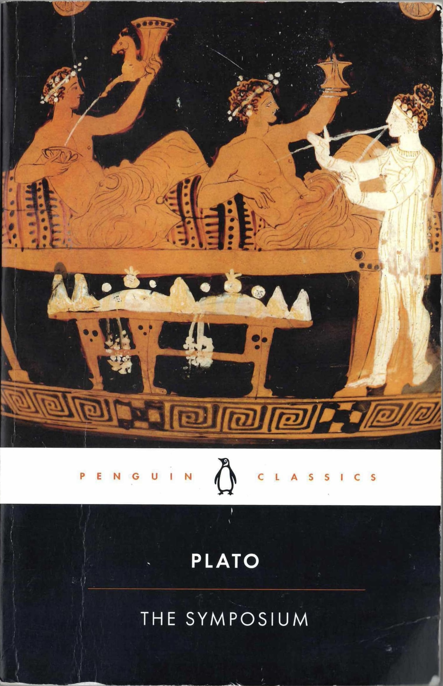

The Symposium
Finished
Just two weeks after finishing ‘The Republic’, I wandered a little to find a book that should be my next read. I tried a couple of books and even brought them along with me to Cebu City, but I couldn’t stick to any of them at that time. Just a day before I got my salary, I returned to the same bookstore in Ayala mall and blindly bought this book. Luckily, it was not that bad a decision. I had quite good nights after dinner, when I read, picturing myself sitting with a group of intellectuals in Athens.
Actually, before I got the Symposium, around 9/11, I went through a rough few days. During the weekend of that week, I started doing my so-called pilgrimage. I walked from the hostel I stayed in, in Cebu, to the Temple of Leah in Busay. On the way back, I had also brought a copy of the Iliad with me, so I paused and read while waiting for the rain to stop. (It was a heavy rain, and it was a Collins Classics copy.) At the bottom of the mountain there was already a town, Busay town, I think. I got a haircut there, and until today I still haven’t had a new one. The walk that day was around 32,000 steps. I had a good Saturday.
During the Temple of Leah trip, I wrote to myself about this word called ‘love’. A few days after that, I bought this book and read a few pages a day after dinner (there was an authentic Thai restaurant in Cebu, thanks to a colleague!), and I finished reading it in less than two weeks. It was still an enjoyable read, and I missed that first-hand feeling of imagining I was sitting with the thinkers of Athens.
Finished at the floating cottage in Dauis, Bohol · Acquired from Fullybooked, Ayala Central Bloc, Cebu